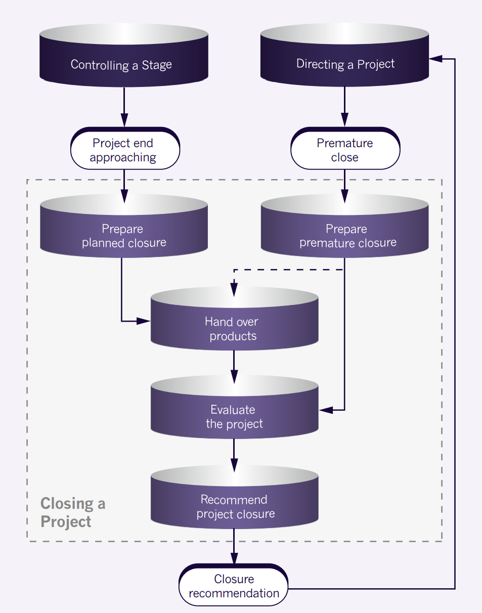

The purpose of the Closing a Project process (see Figure 22.1) is to provide a fixed point at which
acceptance for the project product is confirmed, and to recognize that objectives set out in the
original project initiation documentation have been achieved (or approved changes to the objectives
have been achieved), or that the project has nothing more to contribute
One of the defining features of a PRINCE2 project is that it is finite – it has a start and an end.
If the project loses this distinctiveness, it loses some of its advantages over purely operational
management approaches.
A clear end to a project:
Is always more successful than a slow drift into use as it is a recognition by all concerned
that:
The original objectives have been met (subject to any approved changes)
The current project has run its course
Either the operational regime must now take over the products from this project, or the
products become inputs into some subsequent project or into some larger programme
The project management team can be disbanded
Project costs should no longer be incurred
Provides an opportunity to ensure that all unachieved goals and objectives are identified so
that they can be addressed in the future
Transfers ownership of the products to the customer and terminates the responsibility of the
project management team.

Fig 22-001 Overview of Closing a Project
Closure activities should be planned as part of the stage plan for the final management stage. When
Closing a Project, work is required to prepare input to the project board in order to obtain its
authorization to close the project. Subsequently, the executive should also notify corporate or
programme management that the project has closed.
It is also possible that the project board may wish to trigger a premature closure of the project
under some circumstances (for example, if the business case is no longer valid). If the project is
being brought to a premature close, this process will still need to be executed but may have to be
tailored to the actual project situation.
A number of actions specific to the project’s products may be required after the project, and these
should be documented and planned for as follow-on action recommendations. These may have different
audiences and therefore may need to be issued individually. The needs of the recipient will
determine the format and content – some may want a formal report, some a log entry on a system, and
others a meeting.
22.2 AGILE WAYS OF WORKING THAT MAY ALREADY EXIST
It is possible in some agile environments that there aren’t many defined processes with respect to
closing down a project, although mature agile environments will have these in place. This is
primarily because:
Regular handovers (preferably carried out collaboratively) into operational use (or near
operational use) reduce some of the need to formalize certain activities at the end, as they
have become second nature (e.g. process reviews, updating operational documentation, getting
sign-off/acceptance).
Ending a piece of work is often decided upon at the time (when added value has become marginal)
as opposed to in advance, or when acceptance criteria become satisfied.
Due to the iterative and incremental nature of agile, the frequency of the delivery of product into
operational use, and ease of delivery, are usually good indicators of the level of maturity of agile
within an organization.
22.3 PRINCE2 AGILE GUIDANCE ON CLOSING A PROJECT
Tailoring guidance that may be appropriate is as follows:
Project closure may take the form of a workshop (see section 22.4) where the original baseline
is checked in relation to the final outputs and outcomes of the project, and preparation for
closure authorization can take place. This may include a review of the final release.
Benefits may have already been enabled and be delivering value.
End-of-project activities should already be in an advanced state of completeness due to frequent
releases gradually improving how project closure is done and populating information. For
example:
Project/process evaluation should be ongoing through the frequent use of retrospectives.
Continual use of ‘inspect and adapt’ would mean that the lessons report has been created as
the project has gone along, and many of the lessons would have already been actioned and
evaluated from retrospectives at both the project and delivery levels.
User acceptance would be happening regularly, although care should be taken to ensure that
user acceptance is not too informal when closing the project in order to ensure that the
customer’s quality expectations and acceptance criteria have been met.
Operational handovers (and acceptance) are likely to have happened many times due to the
incremental delivery of products, so the final handover should be a routine event.
Training and technical documentation would be finalized, as it would have been created
iteratively and incrementally throughout the project.
Table 22.1 shows PRINCE2 activities for Closing a Project and how they relate to agile artefacts and
events (all product description references for PRINCE2 products are located in Appendix A).
Table 22.1 PRINCE2 Agile activities for Closing a Project
PRINCE2 activities and products Applicable agile artefacts and events
Prepare planned closure:
Update project plan, A.16
Create product status account, A.18
Artefacts:
Project vision
Product backlog (done/not done)
(Final) release backlog (done/not done)
Potentially shippable increment
Information radiators
Event(s):
Release review
Release retrospective
Prepare premature closure:
Update issue register, A.12
Update project plan, A.16
Create product status account, A.18
Create additional work estimates
Artefacts:
Outstanding impediments
Project vision
Product backlog (done/not done)
(Final) release backlog (done/not done)
Potentially shippable increment (or part thereof, if shippable)
Information radiators
Event(s):
Release review
Release retrospective
Hand over products:
Create/update follow-on action recommendations
Update configuration item records, A.5
Update benefits review plan, A.1
Obtain acceptance record
Artefacts:
Potentially shippable increment
Product backlog (done/not done and value enabled)
Event(s):
Release review (or subsequently)
Evaluate the project:
Create end project report, A.8
Create the lessons report, A.15
Artefacts:
Project vision
Product backlog (done/not done, value enabled)
Release backlog (done/not done, value enabled)
Information radiators
Event(s):
(Final) release review
Project/release retrospective
Recommend project closure:
Close issue register, A.12
Close the risk register, A.25
Close the quality register, A.23
Close the lessons log, A.14
Prepare draft project closure notification
Artefacts:
Product backlog (done/not done, value enabled)
Decisions from the (final) release review or project retrospective
22.3.1 How to …
There are many behaviours, concepts, frameworks and techniques that are used in agile and referenced
throughout this manual. Table 22.2 provides cross-references to some of the most relevant for use
during Closing a Project.
Table 22.2 Relevant agile guidance for Closing a Project
Chapter and section references
Evaluate the project
Sections 26.4.1, 19.4.1
Manage releases
Chapter 27
Assess value
Section 9.4.1
Define quality criteria and acceptance criteria
Chapter 25
Use the definition of ‘done’
Section 11.4, Appendix H
Close a project that has been using agile
Section 22.4
Tailor any of the PRINCE2 management products
Chapter 23
22.4 AGILE CONCEPTS AND TECHNIQUES
22.4.1 An example of how to close a PRINCE2 Agile project
An ideal way to close a project would be with a workshop involving all of the key project
stakeholders. Ideally this would be independently facilitated and use information from project-level
information radiators that have been used throughout the project. It may even take place in the room
or area where the project took place and the project management team worked.
The whole project team should be present (e.g. the project board, project assurance) along with other
stakeholders such as those who will make the final product operational (or the final release of the
product operational), those who will maintain and support it, and those from the strategic level who
will be interested in the project outcome from a programme perspective.
The following is an example of how a workshop could be structured:
Final product demo In order to achieve sign-off from the customer. This would not be a ‘big
event’ as it would be the last in a regular and frequent series of demonstrations. There
shouldn’t be any surprises here and it will not be a ‘big reveal’ due to the constant customer
involvement throughout the project that has resulted in a lot of transparency and interaction.
Follow-on actions These could be assigned to people formally or verbally or even by handing them
a sticky note from an information radiator. Collectively the workshop participants could decide
if unfinished work could be moved over to an appropriate BAU backlog, or handed over to the
strategic/programme level as potentially a new project. Correctly addressing outstanding actions
is most effectively done when the parties affected are in attendance and can discuss the
relative merits of the options available.
Checking against the baseline The final project-level information radiators and a demonstrable
product could be compared with the original vision and baseline information, along with other
supporting documentation that the project was justified against. The information radiators would
typically show the project product description, the business case and the project plan and would
have dynamically displayed this information throughout the project.
Reviewing the use of agile This would involve assessing how well the delivery teams, and the
project management team as a whole, used retrospectives to address issues and risks as they went
along. Further to this, the use of the Agilometer should be checked to see if it had been
assessed correctly and to determine if lessons about the use of agile on this project, and how
the associated risks were handled, could be used on other projects. Ideally, project support
would be in attendance to capture these learnings.
Closing the event Perhaps the executive (depending on personal style), who would be there to
look at the final costs, could thank the team and celebrate the end in some form such as a team
meal. When a project has involved high levels of collaboration and teamwork, and the team is
disbanded, it can result in a degree of ‘mourning’ for the team members, so this should be
anticipated and ideas suggested as to how to reduce this
22.4.2 Premature close
If the project has closed prematurely, it could have been triggered by a fail fast/learn fast
situation caused by the correct use of management by exception (for example, a stage boundary was
reached and the project was no longer viable, or tolerances were forecast to be exceeded and it was
not worth taking remedial action). Many agile techniques are designed to help with this, such as
timeboxing or empirical forecasting, which forces the ‘bad’ news to surface in a transparent
way.
If a project is going to fail it is best that failure arrives as quickly as possible. Many agile
techniques and ways of working can contribute to this, but the following are the most
significant:
Empirical forecasting
Transparency
Timeboxing
Sprint (or release) demonstrations, reviews and retrospectives
Shortening the feedback loop to the customer
Frequent customer interaction
Experimentation, prototyping and spiking
Early enablement of benefits that did not accrue.
All of these concepts and techniques create or force a clear understanding of what is being attempted
and can therefore highlight that a project or stage will take too long, cost too much, will fail to
work or the project objectives have not been set correctly.
22.5 SUMMARY
PRINCE2 uses the Closing a Project process in order to clearly confirm that the project has ended and
that the purpose for it has been met and accepted by the customer.
When using agile this is still likely to be a formal event but an event in which most of the
information is already known and most of the work already done due to the iterative and incremental
nature of the agile way of working. Examples of this would be that benefits are already being
accrued, most of the project’s products are in operational use and documentation is almost complete
and just needs to be finalized.
This then allows for a smooth and efficient closure of the project and helps the project manager and
project board to do this with the minimum of effort thereby enabling them to move on to other work
and other projects without delay